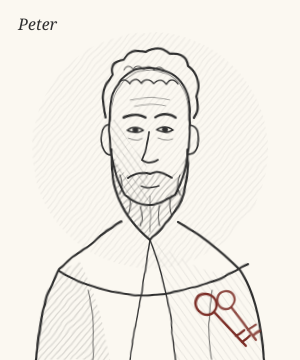
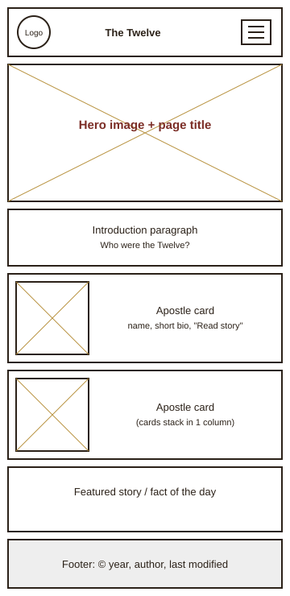
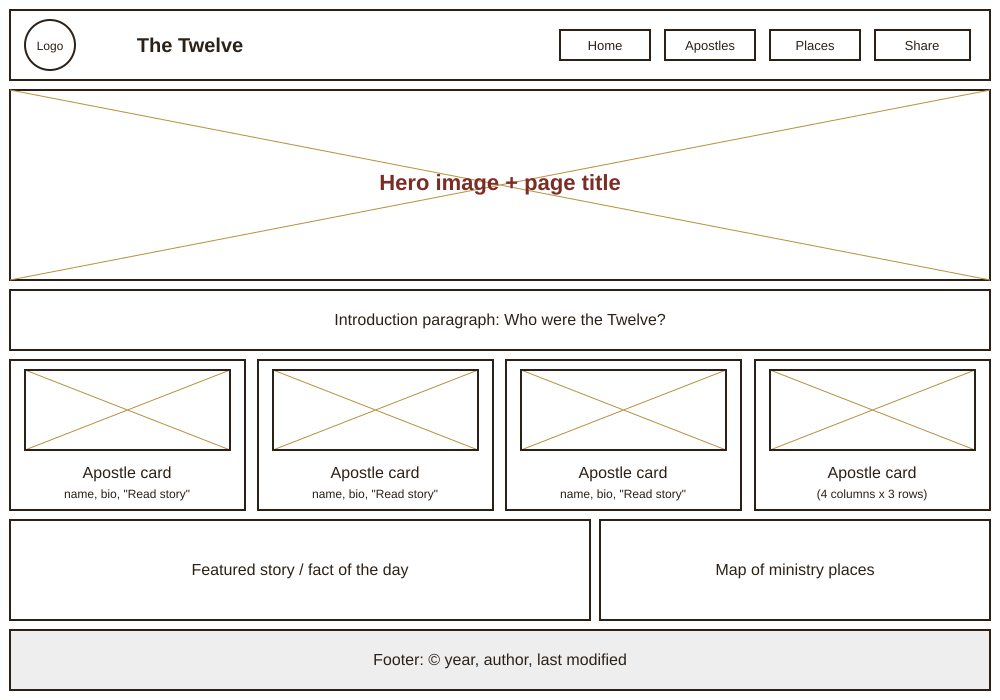

Website Planning Document
Site Name
The Twelve: Stories of the Apostles
- “The Twelve” is how the New Testament itself often refers to the apostles chosen by Jesus Christ, so the name is short, familiar and easy to remember.
- “Stories of the Apostles” tells visitors right away that the site is about their lives and experiences, told as stories rather than as a dry list of facts.
Optional domain availability: thetwelve-stories.org
Site Purpose
The site introduces visitors to the twelve apostles of Jesus Christ and presents their stories in an engaging and visually appealing way. For each apostle the site will provide:
- a short biography and a hand-drawn (pencil sketch) portrait;
- important events from his life and ministry;
- interesting facts (former occupation, symbols, nicknames);
- places connected with his ministry;
- references to the New Testament accounts where his story can be read.
The site will also include a page to filter the apostles (for example, “fishermen” or “wrote a book of the Bible”) and a simple form where visitors can share which story inspired them most.
Scenarios
Target audience: students, families, seminary and Sunday School classes, and anyone curious about the New Testament.
- Who were the twelve apostles, and what were their names?
- What did Peter do before he was called to follow Jesus?
- Where can I read about Thomas in the New Testament?
- Which places did Paul and the other apostles travel to while preaching?
- What is an interesting fact I can share in a lesson about the apostles?
Color Schema
The colors are inspired by old parchment, ink and pencil drawings, so the site feels like an illustrated story book.
Parchment #F5EFE0
Page background, cards on dark header
Ink Brown #2B2118
Body text, header and footer background
Burgundy #7B2D26
Headings, links, buttons
Old Gold #B8923F
Accents: borders, dividers, hover states (not used for text on parchment)
Typography
Cinzel — headings, site title, apostle names
Peter, Andrew, James and John
Lora — body text, biographies, captions
And he saith unto them, Follow me, and I will make you fishers of men. (Matthew 4:19)
Imagery Style
Every apostle will be shown as a simple pencil sketch portrait (SVG) with his traditional symbol, for example keys for Peter. The sketches keep a consistent, hand-drawn look across the whole site and load quickly.

Wireframes
Home page layout in the mobile and desktop (wider) views.

